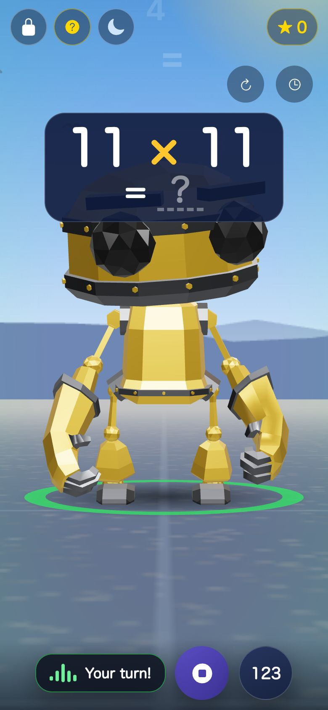
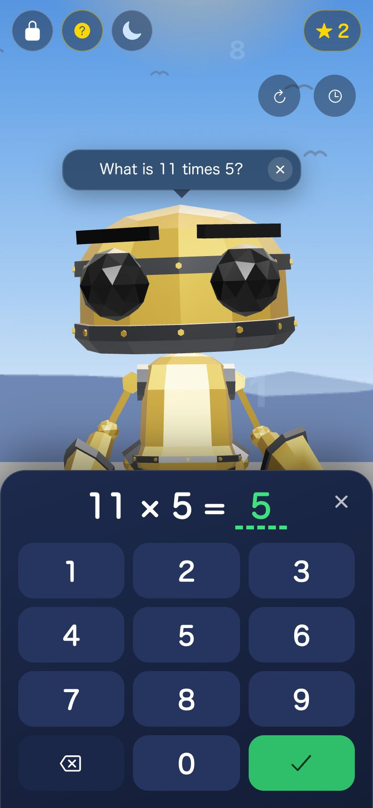
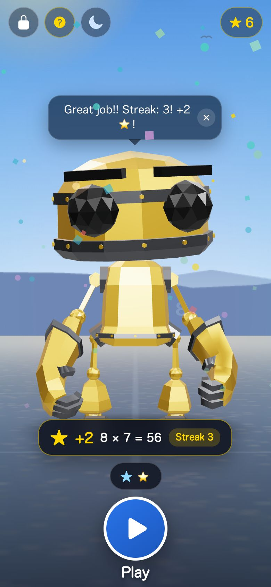
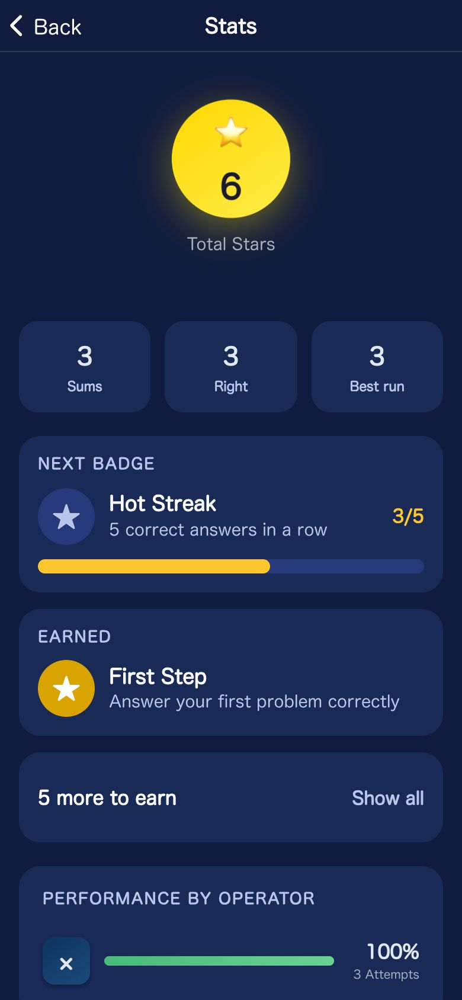

Maths, out loud.
A robot asks a sum. Your child says the answer. No typing and no reading needed, and right answers earn stars.
Coming to iPhone, iPad and Android.
For children of seven and up. English, Spanish, French, German and Portuguese.

How it works
-
1 Tap Play
The robot asks a sum out loud and shows it in big figures, so a child who missed the words can still see it.
-

2 Say the answer, or tap it
Speaking is the point, but a noisy room or a shy day should not stop the game. The number pad is always one tap away and earns the same stars.
-

3 Earn stars
Right answers build a streak. An answer the robot did not hear is never marked wrong, and a wrong one is met with the right answer, not a telling-off.
Their voice stays on the phone
In the app, the phone itself turns the spoken answer into a number. Nothing is recorded and nothing is sent.
Works with no internet
Once a language has been set up, the app plays anywhere: in the car, on a plane, at Grandma's.
No ads, no accounts, no tracking
Nothing to sign up for and nothing that follows your child around.
For parents
Oliver Math practises times tables, adding, taking away and dividing, at three levels or one that adjusts by itself. Your child chooses the kind of sum; you choose the level and the language.
- Settings are behind a gate. Opening them means tapping three numbers written as words, which keeps small hands out.
- Progress stays on the device. Stars, badges and the record of past sums are kept on the phone or in the browser and nowhere else.
- The browser version is different in one way. In a browser, the sound of the answer is sent to Microsoft to be turned into a number. If you would rather it was not, your child can play with the number pad, or wait for the app.

Try it now
It takes a microphone and about a minute.
Play in the browser